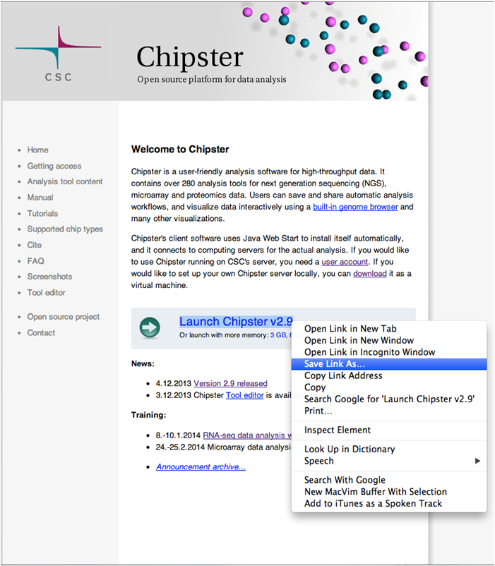
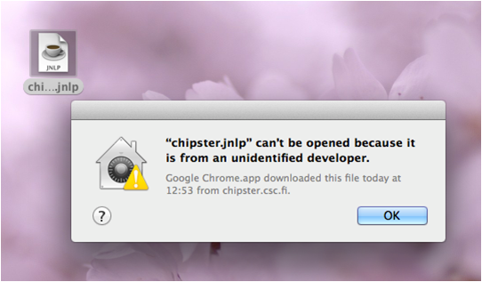

Save the Java web start file chipster.jnlp on your computer by right-clicking the "Launch Chipster" link and selecting the option "Save Link As"
Usually, Chipster can be started by double-clicking the downloaded Web start file. If you get an error message like this
or if the file opens only as a text file, you have to do the following: